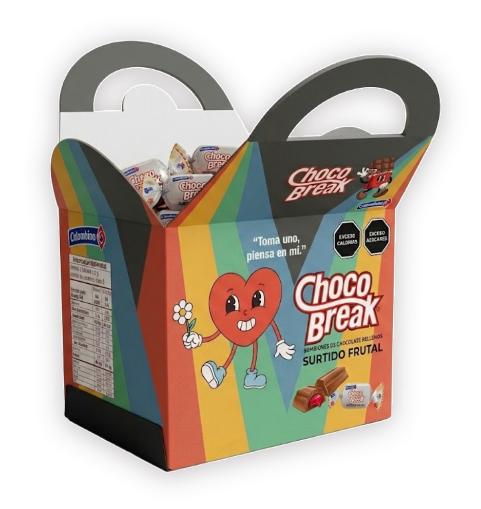
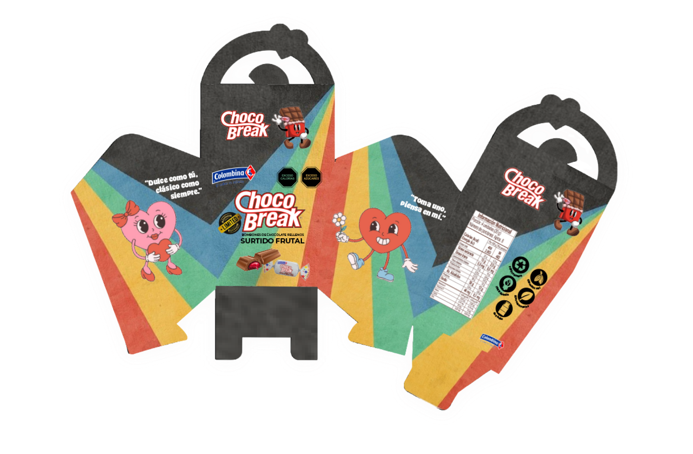
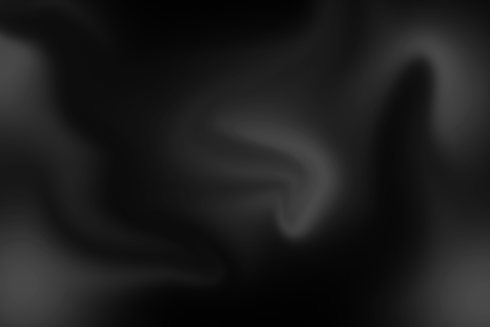
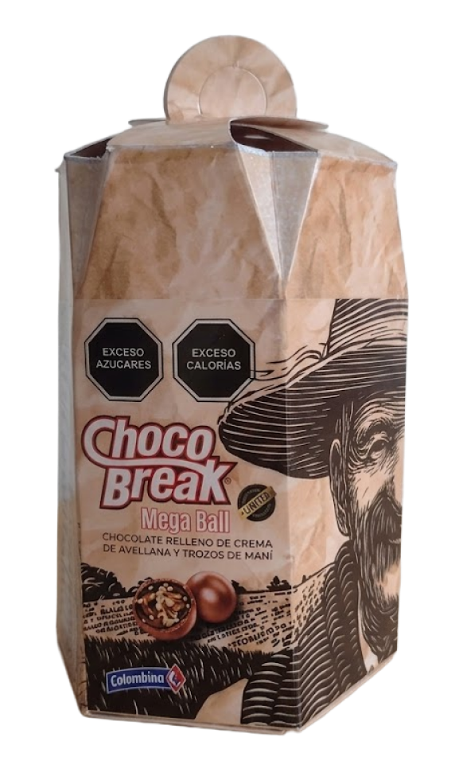
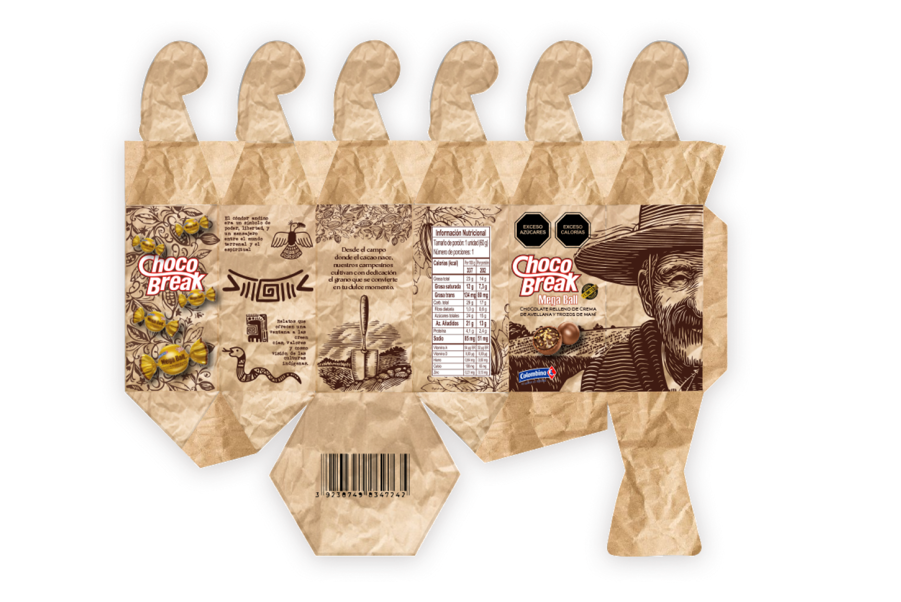
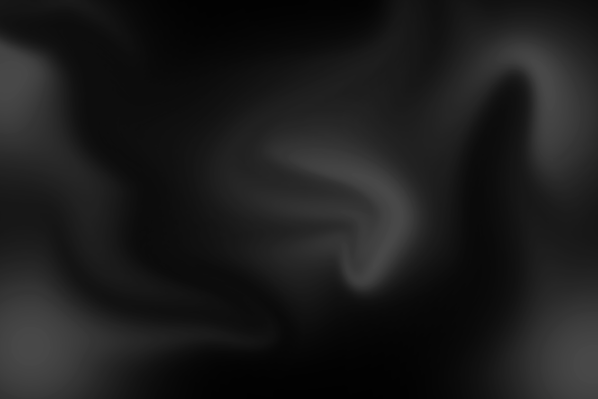
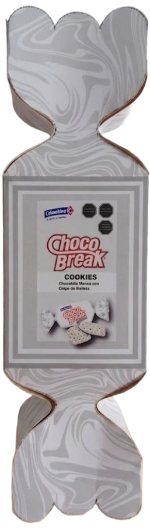
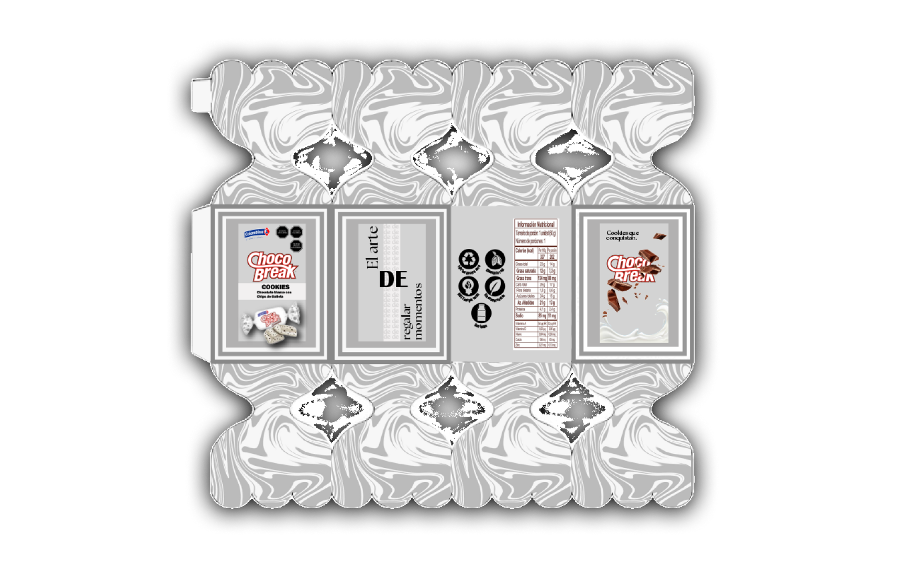
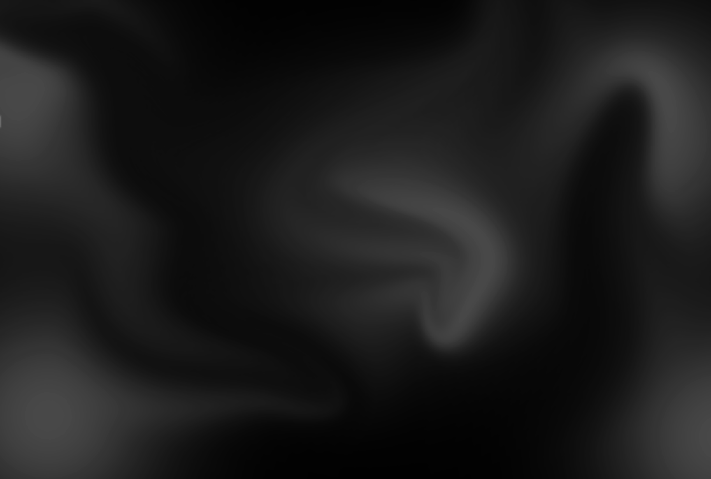

Transformé el empaque tradicional de Choco Break en una experiencia tridimensional y coleccionable a través de tres propuestas que fusionan la textura rústica del papel kraft con la innovación estructural: un Prisma Hexagonal que rinde homenaje al origen indigena del cacao, un diseno Vintage inspirado en la nostalgia de los años 30, y un Cracker que reinterpreta de forma rígida el envoltorio clásico.


Para este proyecto, transformé el empaque tradicional de Choco Break en una estructura tridimensional interactiva que rinde homenaje al diseño vintage de los años 30.


Diseñé este prisma hexagonal enfocado en contar la historia y el origen del cacao.






Diseñé este empaque tridimensional tipo cracker reinterpretando la forma clásica del envoltorio de Choco Break.
